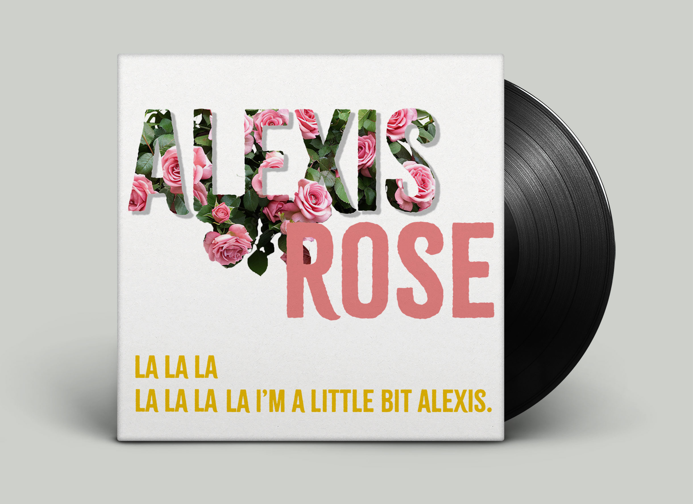
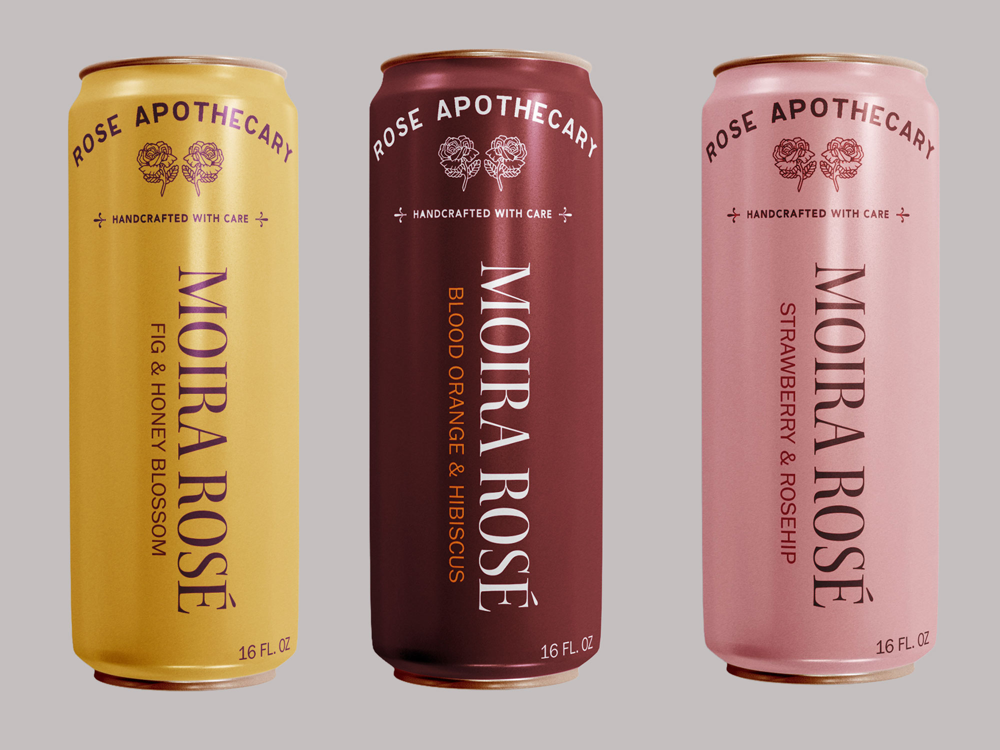
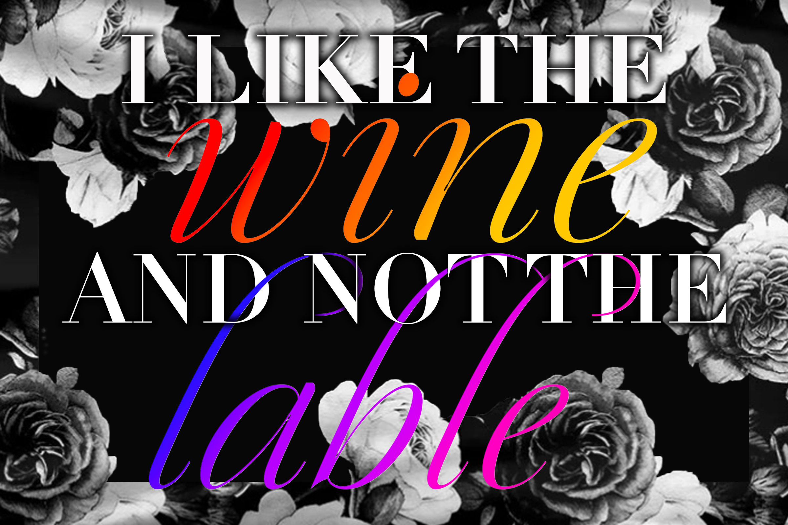

Visual Communication
Schitt's Creek
Project Type: Graphic Typography
Competencies: Photography, Typography, Layout, Composition
Software: InDesign, Photoshop, Illustrator
brainstorming process
Once I selected Schitt's Creek as my overarching theme, I focused on defining a clear approach for each project. I wanted to capture the essence of the Schitt family—over-the-top, dramatic, yet elegant and dynamic—while highlighting individual characters and the show as a whole. To achieve this, I decided to use typeface as a strong visual element and a minimal color palette, allowing the personality of the characters and the show's tone to take center stage in each design.
Main character typography
For Alexis' cover, I came across Citrus Gothic Rough and immediately knew it was the one—honestly, the name alone sold me. It also happens to have this slightly worn, textured finish that gives a classic gothic structure just enough edge, like it's been around, seen things, and still manages to look effortlessly cool.

A refined serif with theatrical presence
For Moira's Rosé can, I chose Kepler Std—an elegant serif with subtle calligraphic details that gives it a refined yet expressive feel . Its theatrical, old-world quality suits Moira Rose perfectly. I kept the design minimal, letting the typeface carry the style.

All elegance, no excess
For David's quote, I used Didot—the signature typeface of Schitt's Creek—paired with a simple cursive accent to add a softer, more expressive touch. The black rose border is inspired by the shirt David wore in that iconic scene, tying the design back to his distinct style.
